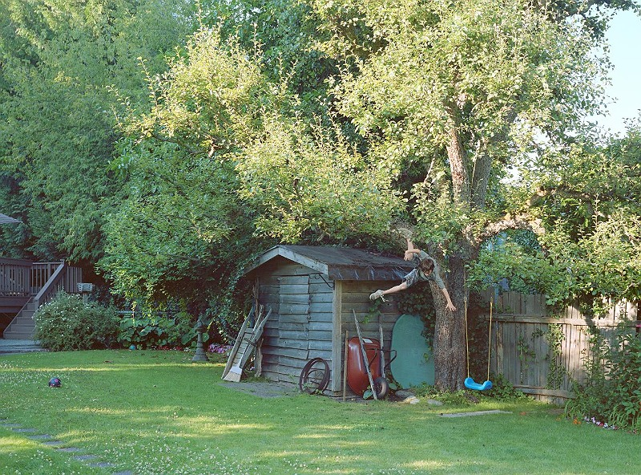
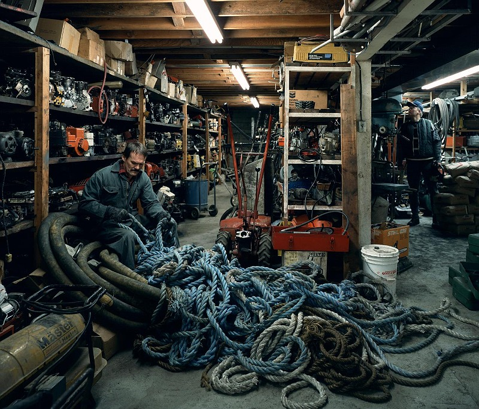

In my Colour Studio Wayposts 2, I wrote about Jeff Wall's work:
Jeff Wall’s use of colour is gentle and subdued. That being said, it is incredibly precise, and its effect on the viewer should not be underestimated. His desire to inspire a kind of ‘cinematography’ translates to the restrained lighting that Wall manipulates in order to create different depths of hue and saturation. This, in turn, suggests specific memories, moments and feelings that are particular to each scene that he constructs, and yet completely universal and highly recognisable.
I think this feeling of nostalgia, and universality through the depiction of specificity is what I really want to drawn on for this final capstone project. I am especially drawn to his images that seem to capture moments of childhood in motion - a boy falling out of a tree, a child throwing a tantrum and lying down on the street, a girl leaping with her friend through a creek in the middle of summer. These moments are captured mid-movement and are just so beautiful to me. It feels like in my research I am collecting ways of viewing childhood. I think I'm thinking a lot about leaving childhood and looking back over my younger years now as I leave university. I really loved being a kid, and I had a wonderful childhood that I remember a lot from.
click here to learn more


make space!